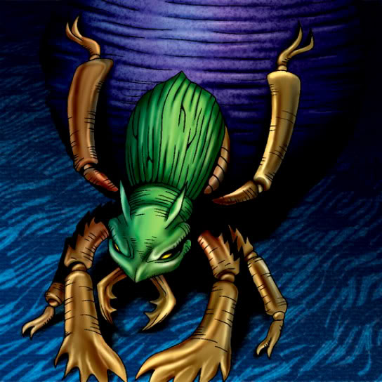

Korogashi

Description: "Reduces all monsters located in vertical and horizontal spaces by 300 points when destroyed in battle."
STATS
ATK: 550
DEF: 400DECK COST
Deck Cost per Card: 15EFFECT NOT IMPLEMENTED
Fusion List (2 Possible Fusions)
- Korogashi + Armed Ninja = Cockroach Knight
- Korogashi + Swordsman from a Foreign Land = Cockroach Knight